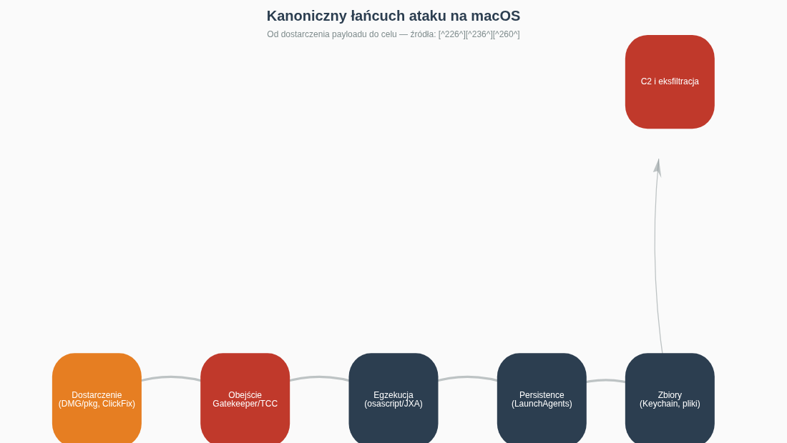
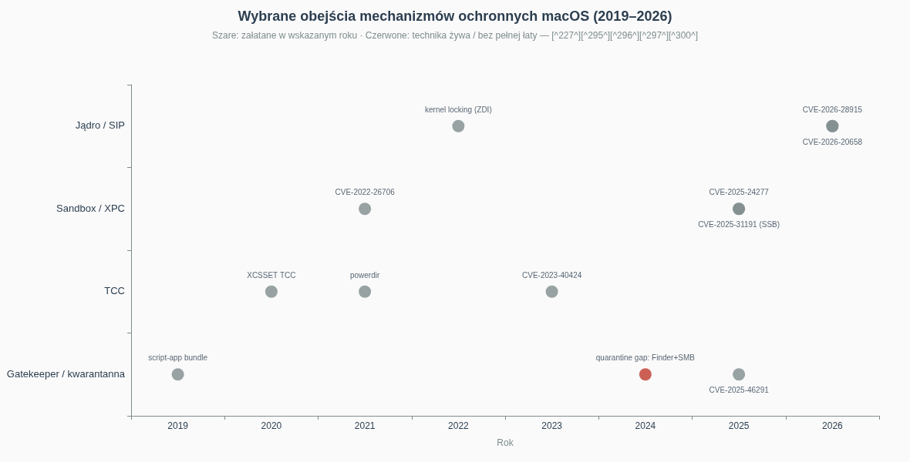
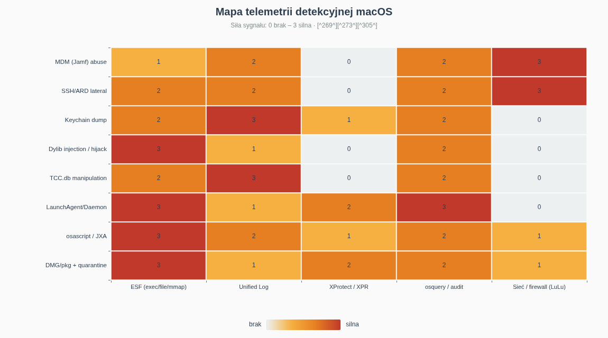
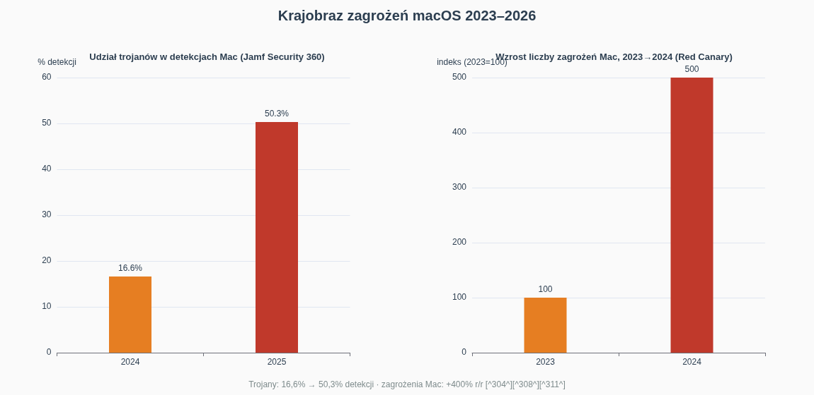

Red Team on macOS — an offensive and detection knowledge compendium
Document type: technical compendium (deep research) · Language: English · Scope: macOS 13 Ventura – macOS 26 Tahoe (Apple Silicon and Intel) · Perspective: Red Team with a Blue Team counterpoint · Date: August 2026
Sister edition: this document is the third part of the series — following "Red Team on Linux" and "Red Team on Windows". It keeps an identical architecture: MITRE ATT&CK mapping, step-by-step scenarios, comparison tables, and detection sections for defenders.
Executive summary
macOS has ceased to be a "safe enclave" and has become a fully mature battleground: according to the Jamf Security 360 report (2026), the Mac computer market grew by 16.4%, and 44% of Mac computers encountered malicious network traffic in 2025 [304]. The economics of the threat have changed fundamentally: stealer-type malware (Atomic macOS Stealer, Poseidon, Odyssey) is sold in a MaaS model for USD 1,000–3,000 per month, and Poseidon alone accounted for roughly 70% of all active macOS infections in mid-2025 [255] [308]. The number of new macOS malware families grew by around 400% from 2023 to 2024, while the share of trojans among detections jumped from 16.6% to 50.3% within a single year [253] [304].
Three strategic conclusions for offensive and defensive teams:
- The perimeter is dead — social engineering lives on. Real campaigns do not strike XNU from the outside; they pass through the user: fake browser updates, malvertising, and the ClickFix tactic, in which the victim pastes a one-line
curl | zshcommand into Terminal themselves — this method is used today both by cybercriminals (AMOS, Odyssey) and by North Korean state operators (BeaverTail/InvisibleFerret) [280] [284]. - TCC, not the kernel, is the center of gravity. The most interesting macOS operations are not kernel exploits but chains of Transparency, Consent and Control bypasses: from the Accessibility permission, through EndpointSecurityClient, to Full Disk Access — and onward to the Keychain. In macOS 27, Apple even plans to extend TCC with new services (SysAdminFiles, NFSHomeDirectory) and replace some old permissions with new categories [251] [240].
- Detection exists and is undervalued. The Endpoint Security Framework emits over a hundred event types (exec, mmap, fork, signal, and since macOS 26.4 also low-level socket events), XProtect Remediator operates as an active behavioral scanner, and the community provides ready-made rules (Elastic, SigmaHQ, coreSigma) — the problem is not a lack of telemetry but a lack of consumers for it [273] [270] [305] [269].
The most important techniques covered in this compendium, in attack-chain order: bypassing Gatekeeper quarantine (including the "live" vulnerability related to downloading via Finder/SMB), DMG/pkg engineering and ClickFix, enumeration via JXA/osascript, escalation via TCC and SUID, persistence in LaunchAgents/Daemons (and the exotic ones: emond, periodic, login hooks, overrides.plist), dylib injection and hijacking, Keychain exfiltration, lateral movement via SSH/ARD/Remote Apple Events, and MDM abuse (Jamf as C2), concluding with C2 in Mythic (Apfell, Poseidon) and Sliver/MacC2 [226] [239] [258] [250] [294] [267] [78].
Legal and ethical disclaimer
For use exclusively in authorized security testing. All techniques described in this document serve education, the work of red teams operating under a formal mandate, defender training, and detection engineering. Using them against systems without the explicit, written consent of the owner is a crime — in Poland, among others, under Articles 267–269b of the Penal Code (unauthorized access, wiretapping, data destruction, attack tooling), and in the USA under the Computer Fraud and Abuse Act. Procedures characteristic of macOS — bypassing Gatekeeper and TCC, Keychain dumping, MDM abuse — carry a particularly high "legal density", because some of them (e.g., circumventing content-protection mechanisms and technical safeguards) may also violate copyright-protection regulations. The authors and distributors of this material accept no liability for misuse. Rule: no written consent = no action.
Table of contents
- Why macOS is a separate red team discipline
- Initial access: Gatekeeper, DMG/pkg and the ClickFix era
- Reconnaissance and enumeration: LOTL the Apple way
- Privilege escalation: from TCC to the XNU kernel
- Persistence: seventeen ways to survive a reboot
- Defense evasion: Gatekeeper, XProtect and dyld magic
- Credential access: the Keychain as a vault
- Lateral movement: SSH, ARD and MDM abuse
- Command and Control: Mythic, Poseidon, Sliver, MDM-as-C2
- Actions on objectives: from stealers to targeted operations
- Blue Team counterpoint: telemetry and detections
- Threat landscape 2024–2026
- Development path and laboratory
- Conclusion
1. Why macOS is a separate red team discipline
A red teamer accustomed to Windows or Linux loses nearly their entire arsenal of intuitions when sitting down at a Mac. There is no Registry; instead there is a web of plists, defaults, and TCC sqlite databases. There is no ETW — there is the Endpoint Security Framework and the Unified Log. Instead of CreateRemoteThread there is DYLD_INSERT_LIBRARIES and task ports. Instead of rundll32 — osascript. The operating system itself is a hybrid: the XNU kernel (Mach + BSD), the launchd launch manager (init, cron, inetd, and watcher in one), plus a stack of Apple's own security mechanisms: SIP (System Integrity Protection) protecting system paths even from root, Gatekeeper with notarization, the App Store application sandbox, and the aforementioned TCC.
A typical macOS attack chain in 2025–2026 looks as follows:

Fig. 1. macOS attack chain — from delivery (DMG, pkg, ClickFix) to C2, with marked points where Apple's mechanisms operate (sources: [226] [236] [260]).
Key doctrinal differences compared to other platforms:
1. The user is the perimeter. Because the external attack surface of a Mac is small (by default no listening services beyond mDNS/Bonjour), nearly all ecosystem crime begins with delivering something to the user: a DMG image with a fake "installer", a pkg package, an archive from malvertising, or a command to paste. Poseidon Stealer campaigns were distributed, among other ways, through malvertising impersonating Arc browser downloads [308] [252].
2. TCC is "UAC on steroids" — and its bypasses are hard currency. Access to Documents, Desktop, camera, microphone, screen recording, and above all Full Disk Access — everything passes through the TCC.db databases (~/Library/Application Support/com.apple.TCC/TCC.db and /Library/Application Support/com.apple.TCC/TCC.db). Analyses such as "A deep dive into macOS TCC" (csandlin.io, January 2026) show that permissions can be deftly transmuted into one another: e.g., kTCCServiceSystemPolicySysAdminFiles grants full access to the user's NFSHomeDirectory, and being an EndpointSecurityClient allows reading files of arbitrary processes [251]. Apple responds with escalation: in the announced macOS 27, directories under /Library currently covered by FDA are to require separate, granular permissions, and some old categories (including Accessibility as a gateway to FDA) will be replaced with new ones [240].
3. "Security through unpopularity" has expired. A ~400% increase in the number of malware families (2023→2024) and the fact that 44% of Macs in the studied Jamf population encountered malicious traffic in 2025 end the era in which macOS was a second-tier target [253] [304]. North Korea treats the Mac as a first-class target: the Contagious Interview campaigns, evolving since 2023, use native macOS implants (BeaverTail as a Qt application, InvisibleFerret in Python) and reach developers through fake recruitment — including a ClickFix variant involving pasting a command [279] [284].
4. Fleet management (MDM) is simultaneously the biggest vector and the biggest blind spot. In corporate environments, Macs are managed by Jamf, Kandji, or Intune. Whoever controls the MDM controls the fleet — they can push configuration profiles (which are themselves a persistence mechanism), pkg packages, and scripts running with root context. Industry reports and EDR comparisons point to abuse of remote administration tools and MDM as a still poorly monitored vector — in practice this path is often excluded from suspicion by security teams [311] [294].
For readers coming from the earlier parts of the series: many proper nouns will repeat (ATT&CK, SIGMA, osquery, MITRE), but almost no concrete technique transfers 1:1. This is precisely what makes macOS a separate specialization — confirmed by the fact that SpecterOps maintains a dedicated course, "Adversary Tactics: Mac Tradecraft", and the Objective by the Sea conference exists exclusively around Apple security [286] [267].
2. Initial access: Gatekeeper, DMG/pkg and the ClickFix era
2.1 Anatomy of the first crossing
Gatekeeper enforces three layers: the quarantine attribute (com.apple.quarantine), verification of Apple's signature and notarization, and — since Sequoia — a forced user decision via System Settings. The red team must therefore answer the question: how to ensure the payload never gets the quarantine label at all, or that the user removes it themselves?
Three realistic classes of answers:
A. Quarantine gaps in download mechanisms. The com.apple.quarantine attribute is set by the process that writes the file — not the one that runs it. Historically, Finder set quarantine for files downloaded from SMB via "Connect to Server", but analyses have shown gaps in this chain: files copied from an SMB share could land on disk without the attribute, opening the way to launching an unnotarized application without a prompt [226]. A fresher example is CVE-2025-46291 — a quarantine-handling bug patched in 2025, showing that the "download → tag → verify" stack itself continues to generate Gatekeeper-bypass-class vulnerabilities [227].
B. Interface change ≠ model change. In macOS 15 Sequoia, Apple removed the famous "Control-click → Open" as a Gatekeeper bypass method for unnotarized software — the user must now go through System Settings → Privacy & Security [232]. This raised the cost of the "convince the user to double-click" class, but did not close it: campaigns simply migrated to multi-step instructions (screenshots in the DMG guiding the user by the hand) and to ClickFix.
C. ClickFix: the user as downloader and loader. Instead of fighting Gatekeeper, attackers make the victim do its work: a fake page ("fix your browser problem", "verify the CAPTCHA") instructs them to paste a one-liner of the form curl -s ... | zsh into Terminal. ClickFix campaigns distributing the AMOS and Odyssey stealers were documented at scale in 2025 [252] [279]; Palo Alto Unit 42 attributed an analogous tactic to DPRK operators [284], and the GitLab security team described North Korean macOS malware delivered precisely by this method [280]. From the defender's point of view this is a nightmare: execution originates from a Terminal launched by a trusted user, so Gatekeeper, quarantine, and notarization are completely bypassed at this stage — the only real line of defense is detection of the command itself (Unified Log, ESF exec, rules on Terminal→curl→interpreter parentage).
2.2 Traditional carriers: DMG, pkg, ZIP
- DMG with "drag to Applications" content — the AMOS/Poseidon classic. The image contains an application icon and an alias of the Applications folder; newer versions add instructions for circumventing Sequoia.
- pkg packages — the key advantage: preinstall/postinstall scripts execute as root during installation. Malicious pkg packages with postinstall scripts were documented in Poseidon campaigns [308] [252]. For the red team, pkg is simultaneously a vector and a privesc/persistence mechanism in one.
- Shlayer-style script bundles — an application bundle whose "binary" is a shell script; historically one of the most effective tricks for deceiving user expectations and simpler engines [231].
- Malvertising and SEO poisoning — sponsored results for "Arc browser download", "Notion for Mac", etc., leading to site clones with malicious installers [308] [252].
2.3 Red team scenario (summary)
- Fleet OSINT: macOS versions, MDM, EDR (see chap. 3).
- Carrier preparation: an ad-hoc-signed DMG with a JXA payload (Apfell) or a ClickFix campaign with a domain cloning a real tool used in the organization.
- Delivery: spear-phishing with a link, not an attachment (mail gateways rarely analyze DMGs).
- Execution: osascript/JXA in memory → staging to a full agent.
- Blue team checkpoint: correlating ESF
exec(Terminal/zsh → curl) with writes to~/Library/LaunchAgents.
3. Reconnaissance and enumeration: LOTL the Apple way
After the first execution, the operator needs answers to four questions: where am I (host, user, domain/MDM), what can I do (TCC, sudo), who is watching (EDR/ESF), where next (network, accounts, keys). macOS has a native tool for each of these — the entire enumeration can be done without uploading binaries.
3.1 Map of native tools (living off the orchard)
| Enumeration goal | Native tool / API | Notes for the red team | Detection (blue team) |
|---|---|---|---|
| Host, OS, hardware | system_profiler SPSoftwareDataType SPNetworkDataType, sw_vers, uname -a |
Very "loud" in logs, but also common among admins | rule on frequent system_profiler from an unusual parent |
| Users and groups | id, dscl . list /Users, dscacheutil -q group |
dscl is the equivalent of net user |
dscl queries outside an admin context |
| TCC permissions | read TCC.db (requires FDA) or an empirical test (e.g., attempt to read ~/Documents) |
a "TCC probe" leaves traces in the sandbox | read of TCC.db by an unusual process |
| Sudo | sudo -n -l |
safe check without a password | sudo event in the log |
| Processes/EDR | ps aux, launchctl list, es_event (API), log show |
look for: Jamf, Kandji, CrowdStrike, SentinelOne, Microsoft Defender, Santa | — |
| Network | arp -a, netstat -anv, lsof -i, scutil --dns |
topology and neighbors for lateral movement | lsof -i from a payload |
| Keychain (metadata) | security list-keychains, security find-generic-password -l ... |
listing without a dump | security invocations from a C2 agent |
| Apple Events / automation | osascript -e 'tell application "Finder" to ...' |
also for internal phishing (TCC prompt) | ESF + TCC event on AED |
The canonical "post-exploitation checklist" toolkit for macOS is SwiftBelt by Cedric Owens — a bash/python script that collects, in a single run, users, shell histories, SSH content, installed applications, network configuration, and browser data, among other things [289]. In the framework role: Apfell and Poseidon modules (Mythic) cover most of these steps with agent commands.
3.2 JXA/osascript as an enumeration language
JavaScript for Automation (JXA) is for macOS what PowerShell is for Windows — an interpreter with full access to the system API (via the Objective-C bridge), run natively and without additional dependencies. Mythic/Apfell built an entire agent on it: enumeration, command execution, download/upload — everything in the memory of the osascript process [267] [268]. The Mythic documentation also describes how JXA cooperates with the ObjC bridge for native API calls (e.g., $.NSFileManager), which makes it possible to read files, list directories, and execute binaries without forking a shell [268].
Defensive implication: detection cannot rely on binary signatures, only on process parentage and arguments — e.g., rules catching osascript -l JavaScript -e and osascript with a parent other than Finder/Terminal/MDM [269].
3.3 What to check in an MDM-managed environment
In a corporation, the first question is not "how do I get root" but "who already has it": the MDM agent (Jamf, Kandji) runs with root privileges and regularly executes scripts. Enumeration includes: /var/log/jamf.log, profiles status -type enrollment, MDM agent configuration files, and above all obtaining MDM secrets (see chap. 8) — because that is the shortest path to the fleet [294].
4. Privilege escalation: from TCC to the XNU kernel
On macOS, privesc has two floors: the POSIX permissions floor (user → root) and the Apple permissions floor (TCC: Accessibility → Screen Recording → EndpointSecurityClient → FDA → iCloud data). In operational practice, the Apple floor is more valuable — FDA opens the Keychain and the data of all applications even without root.
4.1 The POSIX floor
Classic vectors carry over from Linux almost unchanged: sudo misconfiguration (sudo -l, NOPASSWD rules), SUID/SGID files (though SIP limits their number), writable files executed by launchd as root, and the installer environment (pkg with postinstall). The "100 Days of Red Team" series lists sudo and SUID as first-tier macOS privesc vectors [237]. A Mac-specific note: the admin group has broad capabilities (including writes to /Applications), and many developer tools install helpers with elevated privileges.
4.2 The TCC floor: permission chains
The most interesting path is the transmutation of TCC permissions:
- Accessibility (kTCCServiceAccessibility) — allows synthesizing HID events, i.e.... clicking through TCC dialogs on behalf of the user. Apple has restricted this, but historically it was the standard bridge to FDA [243].
- EndpointSecurityClient — a process with this permission can read the files of other processes, which csandlin.io identifies as a realistic escalation path all the way to FDA [251].
- SysAdminFiles / NFSHomeDirectory — the direction Apple is taking in macOS 27: granular permissions replacing monolithic FDA [240] [251].
- Bugs in TCC itself — CVE-2023-40424 showed a TCC bypass via process-environment manipulation; the XCSSET malware combined TCC bypasses with launchd persistence and browser-data theft [243] [246].
4.3 Sandbox escape and the kernel
When a real root/SIP bypass is needed, the CVE scene is active:
| Vulnerability | Year | Class | Operational significance |
|---|---|---|---|
| CVE-2025-24277 (osanalyticshelperd) | 2025 | sandbox escape via XPC | escaping the sandbox into a system-service context [297] |
| CVE-2025-31191 (SSB/keychain-ACL) | 2025 | Security-Scoped Bookmarks | reading keychain ACLs from outside the sandbox — analyzed by Microsoft and independent researchers [300] [298] [301] [302] |
| CVE-2025-43330 | 2025 | system component (ZDI-25-305) | privesc described in the ZDI advisory [293] [303] |
| CVE-2026-20658 | 2026 | kernel | escalation in the XNU kernel [296] |
| CVE-2026-28915 | 2026 | kernel locking | race condition → privesc (ZDI) [295] |
Scale context: the macOS Tahoe 26.6 update patched over 100 CVEs at once — the XNU attack surface remains broad, and Apple maintains a monthly patching cadence [292]. For the red team there are two conclusions: (1) a kernel exploit is a last-resort option (it destabilizes the host, panic risk), (2) TCC/XPC chains are far cheaper and do not require writing kernel memory.
4.4 Scenario: from user to FDA without the kernel
- A JXA payload checks
sudo -n -land EDR presence. - If there is no FDA: TCC-prompt engineering — osascript asks for Accessibility "on behalf of" a legitimate application (e.g., a fake browser helper), and from there synthetic clicks accept further permissions [243].
- Alternative: injection into a process that already has FDA (see chap. 6) — inheriting the TCC context from the parent.
- Verification: reading
~/Library/Application Support/com.apple.TCC/TCC.dband attempting a Keychain dump (chap. 7).
5. Persistence: seventeen ways to survive a reboot
launchd is the heart of persistence on macOS, but not the only heart. Below is the full taxonomy, from canonical to exotic.
5.1 The canon: LaunchAgents and LaunchDaemons
- LaunchAgents (
~/Library/LaunchAgents,/Library/LaunchAgents) — run in the user's context at login. A plist file with the keysLabel,ProgramArguments,RunAtLoad, optionallyKeepAlive(auto-restart). The standard of APTs and stealers [239]. - LaunchDaemons (
/Library/LaunchDaemons) — root context, start at boot. Requires write permissions. Elastic maintains dedicated T1543.001/T1543.004 rules for the creation and modification of these plists [245].
5.2 Beyond the canon: exotica the blue team rarely reviews
| Mechanism | Location / trigger | Context | Note |
|---|---|---|---|
| Login Items (SMLoginItem/Shared File List) | Settings → Login | user | visible in the GUI — low stealth |
| emond (Event Monitor) | /etc/emond.d/rules/*.plist |
root | removed in newer macOS versions; a classic of older campaigns [239] |
| periodic | /etc/periodic/{daily,weekly,monthly} |
root | scripts run cyclically [239] |
| cron / at | crontab, atrun (disabled by default — must be activated) |
user/root | activating atrun is itself an artifact [239] |
| Login/logout hooks | defaults write com.apple.loginwindow LoginHook |
root | an old mechanism, still working [239] |
| overrides.plist (launchd) | /var/db/launchd.db/com.apple.launchd/overrides.plist |
root | toggling Disabled for existing services — persistence by enabling a system daemon [239] |
| Folder Actions | scripts attached to folders | user | triggered by an FS event |
| Dylib proxying / hijack in an existing application | bundle of a legitimate app | user | starts together with the carrier victim (chap. 6) |
| Configuration profiles (MDM) | profiles install |
system | "infrastructural" persistence — a policy pushed as if by MDM [294] |
| Dock/startup UI applications | manipulation of Dock plists | user | rare, loud |
Key operational insight: persistence should be matched to the host's MDM control. On a Jamf-managed machine, the stealthiest option is not a LaunchAgent but embedding oneself in MDM policies — because everything else is "healed" by Jamf during compliance checks [294].
5.3 Persistence hygiene for the red team
- One primary + one fallback (e.g., LaunchAgent + Folder Action on Documents).
- Plist names masquerading as Apple (
com.apple.Safari.Support.plistin user-space is an artifact known from campaigns — better to use your own, neutral name fitting the environment). KeepAlive: SuccessfulExit: falseinstead oftrue— the agent should not resurrect after a kill -9 in an obvious way.- Blue team: KnockKnock (Objective-See) scans exactly these categories; Elastic has rules for launchd [281] [245].
6. Defense evasion: Gatekeeper, XProtect and dyld magic
6.1 Apple's defense in depth, through an attacker's eyes
Layers to defeat: (1) quarantine/Gatekeeper at delivery, (2) XProtect — the signature scanner at write/launch, (3) XProtect Remediator (XPR) — periodic behavioral scans with malware-removal capability, (4) XProtect Behavior Service — runtime behavior detection, (5) SIP and dyld restrictions for protected processes, (6) EDR on ESF [305] [307] [273].

Fig. 2. macOS security bypasses 2019–2026 on a timeline — gray points mark patched vulnerabilities, red ones techniques still viable (including the quarantine gap when downloading via Finder/SMB). Sources: [227] [295] [296] [297] [300].
6.2 Bypassing XProtect: the general principle
XProtect is strong against known signatures and weak against polymorphism and interpreted payloads. Hence three evasion families:
- Interpreted payloads (JXA/osascript, Python, shell) instead of compiled Mach-O — Apfell runs in osascript memory, Poseidon has a
jxacommand for in-memory execution [267] [84]. - File evasion: staging in
~/Library/Caches, random names and strings; minimizing writes (ESF seesmmapanyway, but there are fewer artifacts for XProtect). - Quarantine-off: delivery via channels without the attribute (SMB/Finder gap, archives through non-tagging applications, ClickFix) [226] [279].
6.3 DYLD_INSERT_LIBRARIES: why "LD_PRELOAD for Mac" barely works
The DYLD_INSERT_LIBRARIES variable is strictly restricted: it is ignored for setuid/setgid binaries, for binaries with a __RESTRICT/__restrict segment, and for processes with the hardened runtime lacking the appropriate entitlement (com.apple.security.cs.allow-dyld-environment-variables) or carrying the CS_RESTRICT flag [254] [261]. Practical consequence: env-based injection works mainly on your own applications or applications signed without the hardened runtime. Elastic has a ready-made EQL rule for DYLD_INSERT_LIBRARIES in process environment variables [256].
6.4 Dylib hijacking: the quieter sister of injection
Instead of pushing a library in, you replace the one a legitimate application is looking for:
- rpath hijack — dyld searches the
@rpathlist in order; if the first directory is writable and the library is missing from it, the attacker inserts their own [258] [265]. - weak dylib hijack — a library marked
LC_LOAD_WEAK_DYLIBwhose file does not exist: dyld will tolerate its absence, but if the file appears in the path, it will be loaded [258]. - Dylib proxying — a malicious library bearing the original's name, which re-exports symbols to the real (renamed) one — transparent to the application, loaded at every launch [261].
- A fresh CVE: CVE-2023-42920 — a dylib hijack in FileMaker, showing that this class still generates vulnerabilities in mainstream software [262].
Operational advantage: the host application is trusted and has its own TCC permissions — dylib hijacking inherits the carrier's TCC context (injection into an application with FDA yields FDA). Drawback: the carrier application must be launched by the user. Detection: ESF mmap/dyld events + rules on loading libraries outside the application developer's signature [257] [273].
6.5 Other platform-specific evasions
- Plist-only malware: persistence without a binary (script in a plist) — hard for file scanners [239].
- Legit signed binaries as proxies:
osascript,curl,python3,swift— the entire LOOBins category (living off the orchard binaries) catalogs these cases with ATT&CK references [306] [312]. - Log tampering: the Unified Log is well protected (SIP), but selective clearing with
log eraserequires root and is itself a loud event.
7. Credential access: the Keychain as a vault
The Keychain (login.keychain-db, iCloud Keychain) is the equivalent of the LSASS + Credential Manager combination: website passwords, tokens, certificates, private keys, Wi-Fi passwords. On top of that come browser cookies (sessions = MFA bypass) and SSH/cloud keys.
7.1 Three approaches to the Keychain
- the
securityCLI —security find-generic-password -w,dump-keychain. Requires unlocking the keychain (a prompt with the user's password — hence prompt phishing via osascript:display dialog ... with hidden answer). Loud, but native [264] [315]. - the SecItemCopyMatching API — programmatic reading via the Security framework; used by stealers for quiet harvesting without the CLI [264].
- Offline parse — dumping the
login.keychain-dbfile and decrypting it offline with tools like chainbreaker (requires the user's password or key) [244]. LockSmith from SpecterOps automates the extraction of keys and secrets in post-exploitation scenarios [250].
7.2 Pitfalls and nuances
- Keychain ACLs: entries have per-application access control lists. The analysis of CVE-2025-31191 (Microsoft) showed that the Security-Scoped Bookmarks mechanism allowed reading keychain ACLs from the sandbox — i.e., reconnoitering what there is to take without raising alarms [298] [300].
- Data Protection Keychain (iOS-style) on Apple Silicon and the Secure Enclave: hardware keys never leave the enclave — operations are performed on them, not theft. The red team therefore targets the classic login.keychain-db and application files.
- Browser cookies: Safari protects cookies via TCC/SIP; Chrome/Edge/Firefox keep them in profiles under
~/Library/Application Support— accessible with FDA. Stealers (AMOS/Poseidon/Odyssey) steal them en masse along with the keychain and crypto wallets [252] [255]. - SSH and cloud:
~/.ssh,~/.aws/credentials,~/.config/gcloud, tokens in~/.kube— the standard SwiftBelt list [289].
7.3 Scenario (authorized lab)
- Enumeration:
security list-keychains, FDA check. - Password prompt phishing (osascript dialog) → unlocking the keychain.
- Exfiltration:
security dump-keychain -dto a temporary file, or SecItemCopyMatching in the agent's memory. - Validation: using a stolen browser session token to log into a corporate SaaS application (MFA bypass via session).
- Detection (blue team): rules on
securityfrom an unusual parent, reads oflogin.keychain-dbby a process without the entitlement, ESF file-open on the keychain [273] [269].
8. Lateral movement: SSH, ARD and MDM abuse
Mac fleets rarely form a dense web of mutual trust like an AD domain, so lateral movement is more "point-wise": stolen keys, enabled remote services, and — above all — management infrastructure.
8.1 SSH: the most common real path
Remote Login (SSH) is often enabled for developers and admins. Stolen keys from ~/.ssh plus known_hosts entries provide a ready-made map of targets. macOS technique catalogs list SSH keys alongside Apple Remote Events as primary lateral movement vectors [259] [260]. Offensive variant: appending your own key to the authorized_keys of a user with frequent sudo.
8.2 ARD and Remote Apple Events
- Apple Remote Desktop (ARD) — if enabled (port 3283, 5900 VNC), it provides full screen viewing and control; found in educational and creative fleets [260].
- Remote Apple Events — remote AppleScript execution between Macs (a historic automation mechanism); requires authentication, but in environments with scattered admin scripts it is sometimes abused [260].
8.3 MDM/Jamf: lateral movement, corporate edition
This is the most macOS-specific part of the entire compendium. MDM infrastructure has root on every machine and a push channel — seizing it is lateral movement at scale:
- Agent secrets: the
jamfbinary and its keychain entries (e.g., a stored Jamf service-account password) are sometimes extracted from the local keychain — the encrypted Jamf password can be recovered, because the agent itself must decrypt it [294]. - JamfSniper / dedicated tools: proof-of-concepts demonstrating enumeration and attacks on the Jamf Pro API from stolen credentials [294].
- Orthrus — a research framework for MDM abuse: pushing profiles and packages to the fleet through a seized MDM API [294].
- Profiles as payload: a configuration profile can install CA certificates (SSL interception!), Wi-Fi/VPN payloads, and — via MDM — pkg packages; this is simultaneously persistence and lateral movement [294].
EDR comparisons and industry reports identify RMM/MDM abuse as a growing, insufficiently monitored vector on macOS [311] [304].
8.4 Decision table
| Situation in the environment | Preferred path | Stealth | Scale |
|---|---|---|---|
| Developers, SSH enabled | stolen SSH keys | high (legitimate protocol) | individual hosts |
| Fleet under Jamf/Kandji | MDM API takeover → pkg/profiles | very high relative to EDR (traffic looks like administration) | entire fleet |
| ARD enabled (education/creative) | ARD screen/control | medium | segments |
| No remote services | internal phishing + ClickFix | low–medium | individual hosts |
9. Command and Control: Mythic, Poseidon, Sliver, MDM-as-C2
9.1 Framework landscape
| Framework / agent | Agent language | C2 profile | Strengths on macOS | Source |
|---|---|---|---|---|
| Mythic + Apfell | JXA (osascript) | HTTP(S), distributed profiles | full in-memory, ObjC bridge, huge command library | [267] [268] |
| Mythic + Poseidon | Go | HTTP(S), many Mythic profiles | cross-platform, jxa in-memory, libinject, persist_launchd, socks |
[78] [84] |
| Sliver | Go | mTLS, HTTP(S), DNS, WireGuard | mature C2, implant armory; macOS officially supported | [283] |
| MacC2 | Python/shell | custom | lightweight, educational | [266] |
| MDM-as-C2 | — | Apple Push + MDM API | "C2" through trusted infrastructure, zero implants | [294] |
9.2 Mythic/Apfell: the canon of macOS C2
Apfell (today part of Mythic) was the first widely used C2 designed exclusively for macOS. Philosophy: the agent is JXA, so it runs everywhere without installation, and the JavaScript↔ObjC bridge provides the full system API [267]. The Mythic documentation describes the development of JXA and its integration with the ObjC bridge for native calls [268] [271] [274]. Typical staging: an osascript one-liner downloads and executes a JXA payload in memory.
9.3 Poseidon (Mythic agent): the Go Swiss Army knife
The Poseidon repository and documentation list, among others: jxa (in-memory JXA from the Go agent), libinject (dylib injection), persist_launchd (one-command persistence), socks (pivoting), download/upload, shell [78] [84]. For the red team this is a practical compromise: a Go binary (compiled for darwin/arm64) with a rich toolset and the ability to escape into JXA when it is necessary to vanish from disk.
9.4 Sliver and the open-source scene
Sliver (Bishop Fox) supports macOS as an implant platform; reviews and red-team writeups document macOS operations using Sliver and related tools [283] [266]. MacC2 remains an educational curiosity showing a minimal C2 for darwin [266].
9.5 DarwinOps and the "weaponization pipeline"
Repositories like DarwinOps show the opposite pole: not a C2 framework, but the weaponization of existing techniques — scripts automating the creation of malicious pkgs, JXA payloads, and persistence in a single pipeline [236] [266]. In red team practice, such a pipeline shortens campaign preparation from days to hours.
9.6 C2 through trusted infrastructure
The quietest C2 is the one that does not exist: commands pushed via an MDM profile, a script pushed by a "Jamf policy", or a task in an RMM tool already present in the fleet. Network traffic goes to *.jamfcloud.com / apple.com — beyond the detection budget of most SOCs [294] [311].
10. Actions on objectives: from stealers to targeted operations
10.1 Exfiltration
- Quiet channels: HTTPS to CDNs/fronts (domain fronting is sometimes used), DNS (Sliver), custom Mythic profiles.
- Archiving:
ditto -c -k(native ZIP),tar— data from the Keychain, cookies,~/Documents, crypto wallets; the canonical stealer set [252]. - Exfiltration via cloud services: rclone / iCloud/Drive APIs — traffic in legitimate domains.
10.2 Stealers as "actions on objective-as-a-service"
The MaaS ecosystem monetizes exactly this stage: AMOS (USD 1,000–3,000/mo.) and Poseidon collect the keychain, cookies, autofill data, wallets, and files in a single run, then sell the logs [255] [308]. In ATT&CK terms this is TA0010/TA0009 automated to the limit — the lesson for the red team is that the demonstrative value of a macOS attack lies in data, not in ransomware (the Mac ransomware market is marginal; the business damage comes from session and data theft) [304].
10.3 Targeted operations (APT)
The DPRK shows the full pattern: BeaverTail (downloader/reconnaissance), InvisibleFerret (Python RAT with keylogger and exfiltrator), staging via fake recruitment and ClickFix, target: crypto/fintech developers [279] [284]. Characteristics: patience (multi-stage social engineering), cross-platform payloads, avoiding the kernel — everything in user-space.
10.4 Sabotage and hindering forensics
Removing artifacts: plists, caches, log show/log erase (root). Note — the Unified Log forces correlation; forcibly clearing logs is itself an anomaly detectable through ESF and timeline gaps [273].
11. Blue Team counterpoint: telemetry and detections
11.1 macOS telemetry sources
| Source | What it provides | Access | Key events for detection |
|---|---|---|---|
| Endpoint Security Framework (ESF) | real-time stream of system events | entitlement (EDR) | exec, fork, signal, mmap, file ops, mount, profiles, and since macOS 26.4 — socket events (bind/connect at the ESF level) [273] [270] |
| Unified Log | log show/log stream, process signatures, TCC decisions |
user/root | TCC decisions, launchd launches, osascript |
| XProtect / XPR / Behavior Service | signatures + behavior + remediation | built-in | detections of known families, remediation actions [305] [307] |
| osquery / OpenBSM (audit) | SQL tables over system state | open source | launchd, processes, logged-in users, yara |
| Network / application firewall | per-process egress | LuLu, Little Snitch | new processes establishing outbound connections |

Fig. 3. Detection coverage matrix: offensive techniques × telemetry sources (0 = blind spot, 3 = full visibility). Sources: [269] [273] [305].
Conclusion from the matrix: the weakest coverage concerns MDM abuse (traffic looks like administration) and key TCC bypasses (permission decisions are logged but rarely alerted on). The best covered — launchd persistence and keychain dumps.
11.2 Ready-made rules and projects
- Elastic Security: prebuilt rules for macOS — T1543.001/.004 (launch agents/daemons), DYLD_INSERT_LIBRARIES, suspicious dylib loads [245] [256] [257].
- SigmaHQ + coreSigma: a pipeline converting Sigma rules into queries for macOS (including hunting for osascript, curl-pipe, persistence) [269].
- BeforeCrypt: an overview of the BeaverTail family (DPRK) with TTPs and indicators of compromise [278].
- SecureMac: an analysis of XProtect/MRT updates and their real effectiveness against contemporary threats [313].
- Objective-See: a free toolkit — LuLu (outbound firewall), KnockKnock (persistence scanner), BlockBlock (alert on persistence installation), KextView, ReiKey — the de facto defensive baseline for Macs without EDR [281] [287] [282].
11.3 Click-by-click detection for the top-5 techniques
- ClickFix (Terminal ← curl|zsh): alert on
execwhere the parent ∈ {Terminal, iTerm2} and the child = curl/wget with a pipe argument into an interpreter; correlation with the Unified Log (pasting into a terminal generates events) [279] [269]. - LaunchAgent persistence: FIM on
~/Library/LaunchAgents+ ESF file-create; rule on a plist withRunAtLoad=truecreated by a process that is not an installer/MDM [245]. - Dylib injection/hijack: ESF mmap on libraries outside application directories; rule on a hardened-runtime process loading an unsigned dylib [256] [257].
- Keychain dump: processes (≠ securityd/MDM) opening
login.keychain-db;security dump-keychaininvocations outside an admin session [264]. - MDM abuse: anomalies in the MDM API (new packages/profiles outside a change window), the
jamfbinary launched by a user, exfiltration of MDM secrets from the keychain [294] [311].
11.4 A trend favoring defenders
Apple is steadily expanding ESF (macOS 26.4 added socket bind events — previously a C2 blind spot) [270], and XPR is turning XProtect from a passive scanner into an active "remediator" [305]. At the same time, macOS 27 will tighten TCC — both sides must update their playbooks with every major release [240].
12. Threat landscape 2024–2026
12.1 Stealers: the industrialization of theft
Three families dominate the statistics:
- AMOS (Atomic macOS Stealer) — sold on Telegram for USD 1,000–3,000/mo., with a panel, builder, and regular updates circumventing new macOS versions; steals the keychain, cookies, autofill, wallets, files [255] [252].
- Poseidon (OSX.Poseidon / Storm-0468) — at its peak around 70% of active macOS infections (2025), distributed through malvertising cloning downloads of popular applications [308] [252].
- Odyssey — the successor in the AMOS line, observed in ClickFix campaigns in parallel with AMOS [252].
A common TTP taxonomy of stealers: delivery (DMG/malvertising/ClickFix) → Gatekeeper bypass (instructions for the victim) → osascript/native APIs → keychain dump (password prompt) → grabbing cookies/wallets → HTTPS exfiltration to the panel [252].
12.2 Numbers that change attitudes

Fig. 4. Two market signals: the explosion in the trojan share of detections (16.6% → 50.3%) and the fourfold growth in the number of macOS malware families. Sources: [304] [308] [253].
- +400% new macOS malware families (2023→2024) [253].
- Trojans: 16.6% → 50.3% of detections year over year; adware declining, clear professionalization [304].
- 44% of Macs in the Jamf population encountered malicious traffic in 2025; PuAgent accounts for 16.41% of detections as the most common single family [304].
- Independent analyses confirm the stealer trend persisted throughout 2025 [253], government advisories on LOTL techniques underline the universality of these TTPs on macOS as well [314], and the LOLBins/LOOBins category is the subject of separate reviews [312].
12.3 State-sponsored campaigns
DPRK (Contagious Interview / DeceptiveDevelopment): fake recruiters → a "test assignment" → BeaverTail/InvisibleFerret → theft of wallet data and crypto infrastructure. The 2025 variant: ClickFix with a request to "fix the camera" during an interview [279] [284]. Lesson for the red team: the most effective APT emulations on macOS are emulations of the recruitment process and developer tooling, not exploits.
12.4 Supply chain
The year 2025 brought macOS links in supply-chain attacks: North Korean campaigns spread malicious packages in developer registries (including npm), harvesting secrets from developers' machines, including Macs [280] [279]. Operational conclusion: the developer Mac is a strategic target — signing keys, CI/CD tokens, SSH access to production.
12.5 What will change in 2026+
- macOS 27: granular TCC (SysAdminFiles, NFSHomeDirectory) — the old "Accessibility→FDA" tricks will die out, new chains will appear [240] [251].
- ESF with socket events (26.4) closes the last major C2 blind spot — C2 will shift even more strongly into trusted domains and MDM [270].
- Analysts expect further growth of living-off-the-land and ClickFix techniques [312].
13. Development path and laboratory
13.1 Courses and certifications
| Item | Nature | For whom | Source |
|---|---|---|---|
| SpecterOps — Adversary Tactics: Mac Tradecraft | commercial course, lab-intensive | red team operators | [288] [285] [286] |
| SO-CON 2025 — "Mac tradecraft" talk | conference talk (recordings/slides) | everyone | [235] |
| Objective by the Sea (OBTS) | 100% Apple security conference | both sides | [267] |
| 100 Days of Red Team — macOS series | free technical notes | self-learners | [239] |
| Mythic blog (JXA/ObjC deep dives) | technical articles by the creators | C2 operators | [272] [268] |
| LOOBins (loobins.io) | catalog of macOS LOTL binaries with ATT&CK mapping | red + blue | [306] |
13.2 Laboratory (legal, your own)
- Hardware/VM: an Apple Silicon Mac (UTM/VirtualBuddy) — a second instance as the "victim", a third as the MDM (Jamf Now free tier / MicroMDM open source).
- Blue baseline: LuLu + KnockKnock + BlockBlock, osquery with macOS packs, Unified Log forwarded to a SIEM [281].
- Red baseline: Mythic (Apfell + Poseidon), Sliver, SwiftBelt, your own pkg-builder [267] [78] [289] [236].
- Training scenarios: (a) ClickFix → LaunchAgent → Keychain → egress; (b) pkg postinstall → LaunchDaemon → dylib hijack of a carrier with FDA; (c) MDM takeover → profiles → fleet. For each: build the detection before considering the scenario "passed".
13.3 How to read CVEs and advisories for macOS
First-choice sources: Apple Security Releases (list of CVEs per version), ZDI advisories (technical details, e.g., ZDI-25-305), Microsoft Security Blog (root-cause analyses, e.g., SSB), Objective-See (malware writeups) [292] [295] [300]. The rule: every Apple "security update" is a map of what previously worked — updating the red team playbook after a major release is not optional.
14. Conclusion
macOS has matured into a full-fledged theater of red team operations — with its own frameworks (Mythic/Apfell/Poseidon), its own LOTL catalog (LOOBins), its own criminal economy (AMOS/Poseidon MaaS), and its own APT campaigns (DPRK). Three truths worth taking away:
- Attacking a Mac is attacking the human and trust, not the kernel. ClickFix, malvertising, fake recruitment — these carry the payload; Gatekeeper and TCC are bypassed mainly through social engineering or context inheritance, rarely through exploitation [279] [308].
- The most valuable target is not root but TCC/FDA + Keychain + MDM. Whoever has FDA and MDM secrets has the fleet — without a single byte of shellcode in the kernel [251] [294].
- The blue team has the tools — it needs consumers. ESF, XPR, the Unified Log, Elastic/Sigma rules, and the free Objective-See toolkit cover most of the techniques described here; the red team's advantage today stems mainly from the fact that macOS telemetry in many organizations still lands in a void [273] [281] [304].
As in the previous parts of the series (Linux, Windows): the techniques are described at a depth sufficient for building detections and authorized emulations — and no deeper. The full force of this document should serve the side that signed the engagement.
References
[78]: https://hacktricks.wiki/en/windows-hardening/mythic.html [84]: https://redsiege.com/blog/2023/06/introduction-to-mythic-c2/ [226]: https://www.tarlogic.com/blog/macos-gatekeeper-evasion-initial-access/ [227]: https://www.sentinelone.com/vulnerability-database/cve-2025-46291/ [231]: https://www.jamf.com/blog/shlayer-malware-abusing-gatekeeper-bypass-on-macos/ [232]: https://forums.macrumors.com/threads/macos-sequoia-makes-it-harder-to-override-gatekeeper-security.2433066/ [235]: https://www.youtube.com/watch?v=t_L2bdbXkp0 [236]: https://www.redfoxsec.com/blog/macos-red-teaming [237]: https://www.redfoxsec.com/blog/macos-security-privilege-escalation [239]: https://www.100daysofredteam.com/p/a-red-teamers-primer-to-establishing-persistence-on-macos [240]: https://wojciechregula.blog/tags/tcc/ [243]: https://www.iru.com/blog/malware-bypass-tcc [244]: https://www.startupdefense.io/mitre-attack-techniques/t1555-001-keychain [245]: https://detection.fyi/elastic/detection-rules/macos/persistence_suspicious_launch_agent_or_launch_daemon/ [246]: https://www.sentinelone.com/labs/bypassing-macos-tcc-user-privacy-protections-by-accident-and-design/ [250]: https://hacktricks.wiki/en/macos-hardening/macos-red-teaming/macos-keychain.html [251]: https://blog.1nf1n1ty.team/hacktricks/macos-hardening/macos-security-and-privilege-escalation/macos-security-protections/macos-tcc [252]: https://redcanary.com/blog/threat-intelligence/atomic-odyssey-poseidon-stealers/ [253]: https://falconfeeds.io/blogs/macos-stealer-threats-2024-2025-trends-tactics-defenses/ [254]: https://zeyadazima.com/notes/osmrnotes/ [255]: https://www.threatdown.com/blog/welcome-to-the-era-of-macos-stealers/ [256]: https://www.elastic.co/guide/en/security/8.19/dylib-injection-via-process-environment-variables.html [257]: https://app.tidalcyber.com/references/e5f59848-7014-487d-9bae-bed81af1b72b [258]: https://www.cyberark.com/resources/threat-research-blog/a-deep-dive-into-penetration-testing-of-macos-applications-part-3 [259]: https://attack.mitre.org/techniques/T1021/ [260]: https://unit42.paloaltonetworks.com/unique-popular-techniques-lateral-movement-macos/ [261]: https://theevilbit.github.io/posts/dyld_insert_libraries_dylib_injection_in_macos_osx_deep_dive/ [262]: https://fm-security.com/posts/dylib/ [264]: https://www.esentire.com/blog/fake-deepseek-site-infects-mac-users-with-atomic-stealer [265]: https://hacktricks.wiki/en/macos-hardening/macos-security-and-privilege-escalation/macos-proces-abuse/macos-library-injection/macos-dyld-hijacking-and-dyld_insert_libraries.html [266]: https://blog.balliskit.com/setup-and-weaponize-mythic-c2-using-darwinops-to-target-macos-9c7d45a44d8b [267]: https://objectivebythesea.org/v2/talks/OBTS_v2_Thomas.pdf [268]: https://docs.specterops.io/mythic-agents/apfell-docs/home [269]: https://www.nebulock.io/blog/coresigma-developing-an-endpoint-security-framework-pipeline [270]: https://phorion.io/blog/reverse-engineering-macos-26.4s-undocumented-socket-bind-events/ [271]: https://github.com/MythicAgents/apfell/blob/master/README.md [272]: https://specterops.io/blog/2020/08/13/a-change-of-mythic-proportions/ [273]: https://malware.news/t/detection-engineering-using-apple-s-endpoint-security-framework/36646 [274]: https://github.com/MythicAgents/apfell [278]: https://www.beforecrypt.com/en/beavertail-malware-threat-overview/ [279]: https://thehackernews.com/2025/09/dprk-hackers-use-clickfix-to-deliver.html [280]: https://gitlab-com.gitlab.io/gl-security/security-tech-notes/threat-intelligence-tech-notes/north-korean-malware-sept-2025/ [281]: https://objective-see.org/tools.html [282]: https://amerpie.lol/2025/05/30/blockblock-and-knockknock-from-objectivesee.html [283]: https://tldrsec.com/p/tldr-sec-208 [284]: https://unit42.paloaltonetworks.com/north-korean-threat-actors-lure-tech-job-seekers-as-fake-recruiters/ [285]: https://specterops.io/training/ [286]: https://pentester.wtf/blog/2020/specterops-2020-review/ [287]: https://objective-see.org/products/lulu.html [288]: https://informaconnect.com/adversary-tactics-identity-driven-offensive-tradecraft/ [289]: https://github.com/cedowens/SwiftBelt [292]: https://daily.dev/posts/about-the-security-content-of-macos-tahoe-26-6-ypzwli29b [293]: https://www.sentinelone.com/vulnerability-database/cve-2025-43330/ [294]: https://hacktricks.wiki/en/macos-hardening/macos-red-teaming/index.html [295]: https://www.sentinelone.com/vulnerability-database/cve-2026-28915/ [296]: https://www.sentinelone.com/vulnerability-database/cve-2026-20658/ [297]: https://www.iru.com/blog/crashone-cve-2025-24277-macos-sandbox-escape [298]: https://hackyboiz.github.io/2025/08/07/clalxk/MacOS_Sandbox_Escape_en/ [300]: https://www.microsoft.com/en-us/security/blog/2025/05/01/analyzing-cve-2025-31191-a-macos-security-scoped-bookmarks-based-sandbox-escape/ [301]: https://windowsforum.com/threads/critical-macos-security-flaw-cve-2025-31191-sandbox-escape-exploited-and-mitigated.364265/ [302]: https://malware.news/t/analyzing-cve-2025-31191-a-macos-security-scoped-bookmarks-based-sandbox-escape/93819 [303]: https://www.zerodayinitiative.com/advisories/ZDI-25-305/ [304]: https://b2b-cyber-security.de/en/security-360-reports-2026-bedrohungslage-fuer-macos-und-mobile-endgeraete/ [305]: https://www.trio.so/blog/xprotect-for-mac [306]: https://deepstrike.io/blog/what-is-living-off-the-land-binaries-lolbins [307]: https://www.youtube.com/watch?v=1pJWqtBxb50 [308]: https://www.jamf.com/resources/white-papers/security-360-annual-trends-report/ [311]: https://stabilise.io/blog/jamf-protect-vs-crowdstrike-vs-sentinelone-vs-sophos-edr-mac-comparison-2026 [312]: https://www.emsisoft.com/en/blog/46383/exploring-lolbins-the-growing-threat-hiding-in-plain-sight/ [313]: https://www.securemac.com/news/apple-is-updating-xprotect-and-mrt-is-it-enough [314]: https://www.cyber.gov.au/about-us/view-all-content/alerts-and-advisories/identifying-and-mitigating-living-off-the-land-techniques [315]: https://github.com/lutzenfried/Methodology/blob/main/13%20-%20MacOS%20intrusion.md